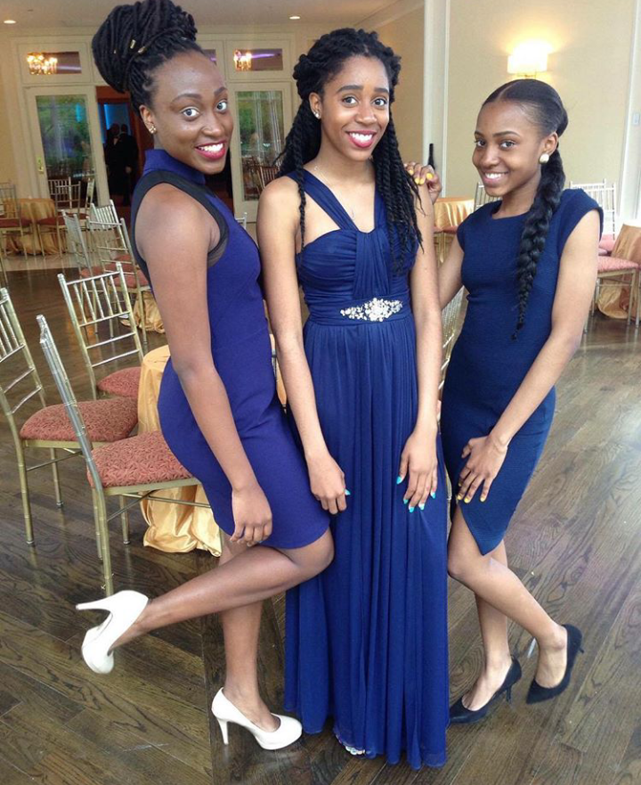

Artist

Noticing the numerous questions people had about their kinks, coils,and fro's:
Three friends, Makalya, Kassia, and Kayla have started a natural hair brand called
"knotted.up". Initially the girls started the buisness to answer these questions,
through hair tutorials, but expanded their brand objective to teaching youth age how to take care of their hair and ultimately have fun with it.
These young women are also in the process of creating different hair accessories and kinds of apparel,
such as shirts and hats, which is available here: Page
Check them out on Facebook: Page and Instagram:@knotted.up
Being the innovator that she is Eaysia, a fellow Naturalista, wasn't satisified with the lack of growth EcoStyler, a gel used for styling and holding hairstyles, provided. She then decied to check out a few DIY, do it yourself,Youtube videos and decided to share what she discovered.
Writing to connect with others, Nye has been interested in reading since young, his
mother giving him his first book sparked and lead to his writing stories in English class during
elementary, developing his passion Nye started to write fictional stories developing them into poems and tales
Some of his works are located here: